Feed post (1)
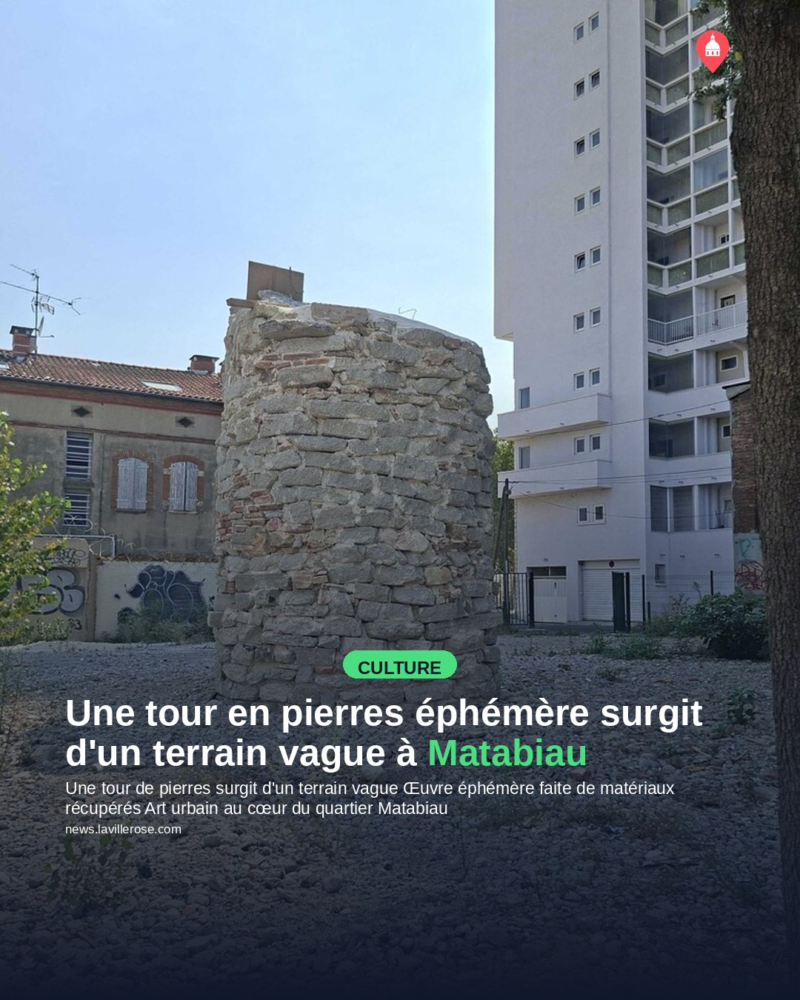
Une tour en pierres éphémère surgit d'un terrain vague à Matabiau
Texte sur l'image
Une tour de pierres surgit d'un terrain vague
Œuvre éphémère faite de matériaux récupérés
Art urbain au cœur du quartier Matabiau
Légende publiée
Au milieu d'un terrain vague rue des Jumeaux, une tour en pierres intrique les habitants du quartier Matabiau depuis quelques semaines. Derrière cette silhouette mystérieuse se cache « Obra Nueva », une installation éphémère signée de l'artiste Ernesto Artillo, créée dans le cadre du Festival Nouveau Printemps. L'œuvre est entièrement construite à partir des pierres et matériaux récupérés sur place, là où des maisons de ville ont été démolies en 2022. Le titre joue sur le double sens espagnol d'obra — œuvre d'art ET chantier —, un clin d'œil poétique à la transformation en cours du quartier, piloté par l'aménageur Europolia. Une façon surprenante de marquer la mémoire d'un lieu avant sa reconstruction.
Modifier sur GitHub →
Story (12)
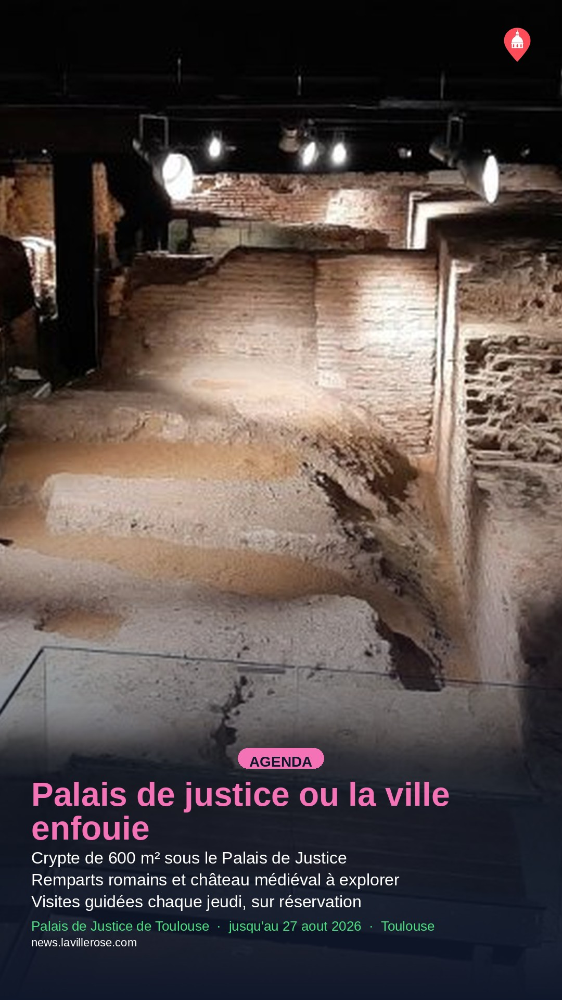
Visites guidées de la crypte archéologique du Palais de Justice
Modifier sur GitHub →

Idées de sorties à Toulouse pour les derniers week-ends de vacances
Modifier sur GitHub →
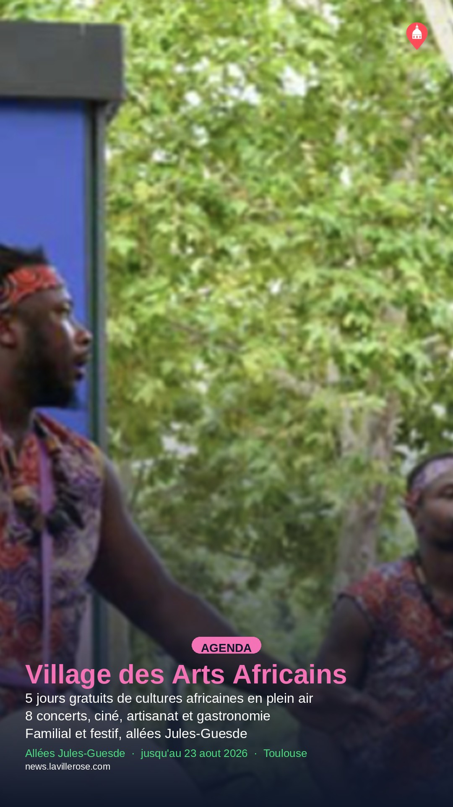
Le Village des Arts Africains revient cinq jours allées Jules-Guesde
Modifier sur GitHub →
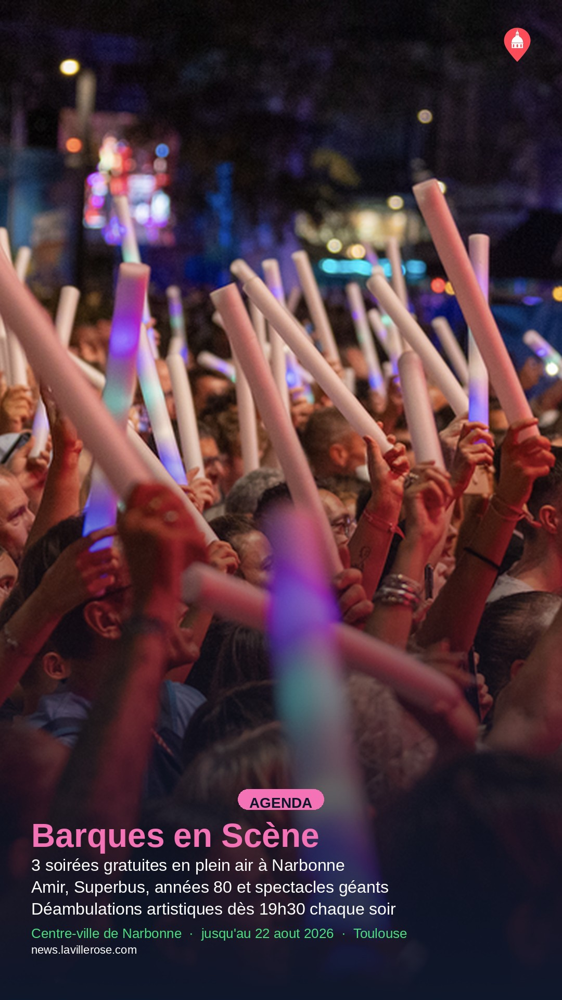
Barques en Scène : trois soirs de concerts gratuits à Narbonne en août
Modifier sur GitHub →

Fronton, Saveurs & Senteurs fête ses 37 ans du 21 au 23 août
Modifier sur GitHub →
Open air électro gratuit sur l'île du Ramier, artistes féminines à l'affiche
Modifier sur GitHub →
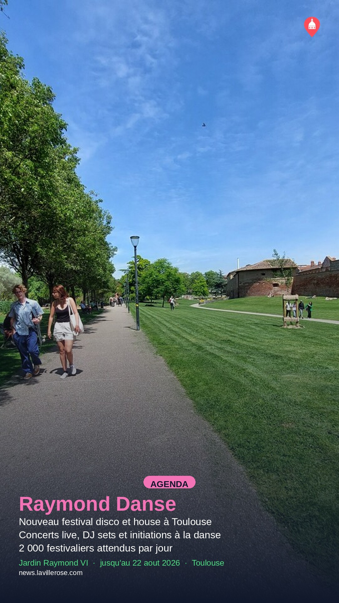
Raymond Danse : un nouveau festival disco et house au jardin Raymond VI
Modifier sur GitHub →
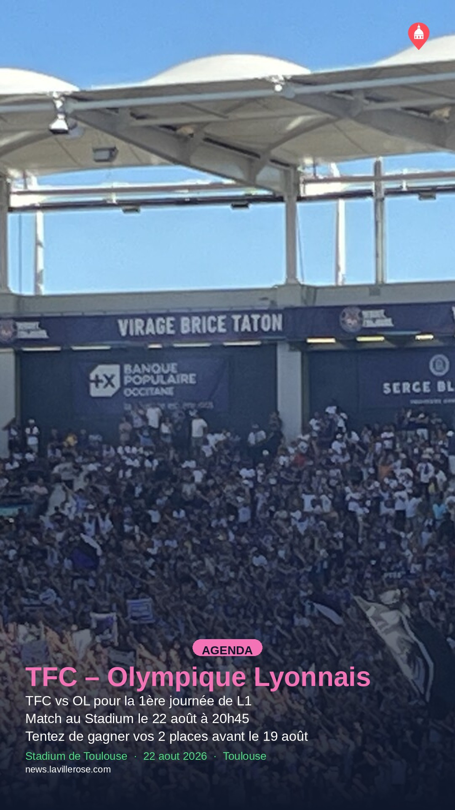
Places à gagner pour TFC – Olympique Lyonnais au Stadium
Modifier sur GitHub →

Jeu d'aventure en famille autour de l'Aéropostale
Modifier sur GitHub →

Le Cercle des Poètes Disparus projeté en plein air à Toulouse
Modifier sur GitHub →

31 Notes d'été : jazz, visites et théâtre citoyen à Toulouse
Modifier sur GitHub →

La forêt magique : énigmes et aventures les 22 et 23 août
Modifier sur GitHub →
À venir (21)
Événements déjà en base qui redeviendront éligibles à une Story sur une date future,
d'après leur planning actuel. Projection, pas une garantie : elle suppose qu'aucun
nouvel article n'arrive et que rien d'autre n'est publié entre-temps.
2026-08-23
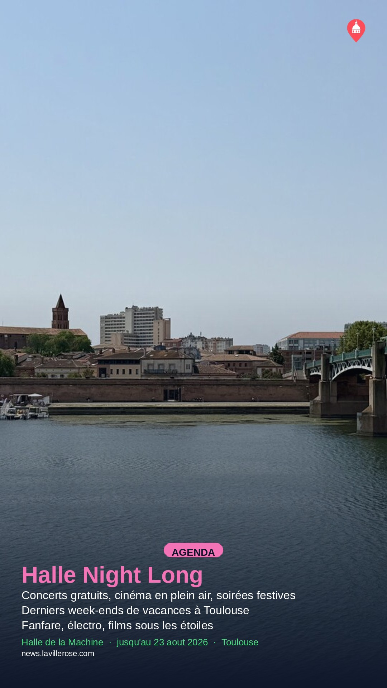
Idées de sorties à Toulouse pour les derniers week-ends de vacances
jusqu'au 23 aout 2026

Le Village des Arts Africains revient cinq jours allées Jules-Guesde
jusqu'au 23 aout 2026
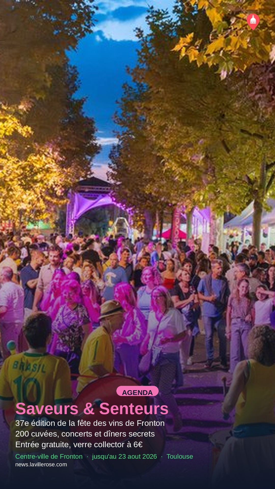
Fronton, Saveurs & Senteurs fête ses 37 ans du 21 au 23 août
jusqu'au 23 aout 2026

Jeu d'aventure en famille autour de l'Aéropostale
jusqu'au 23 aout 2026
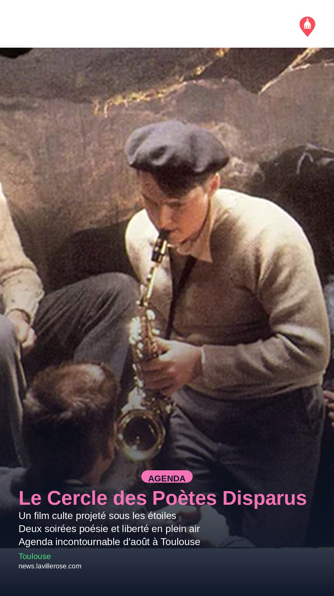
Le Cercle des Poètes Disparus projeté en plein air à Toulouse
jusqu'au 23 aout 2026
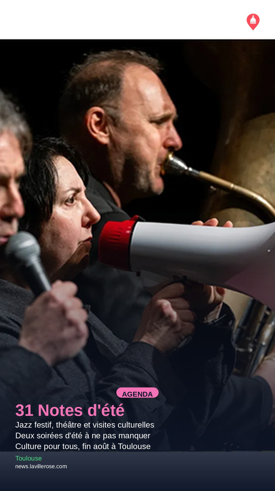
31 Notes d'été : jazz, visites et théâtre citoyen à Toulouse
jusqu'au 23 aout 2026

La forêt magique : énigmes et aventures les 22 et 23 août
jusqu'au 23 aout 2026
2026-08-24

Un food truck s'installe à la Cinémathèque pour le cinéma en plein air
jusqu'au 29 aout 2026
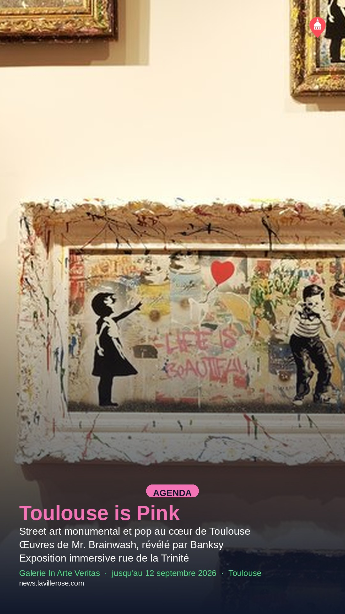
Mr. Brainwash expose "Toulouse is Pink" à la galerie In Arte Veritas
jusqu'au 12 septembre 2026
2026-08-25

Visites guidées de l'exposition Sorolla à la Fondation Bemberg cet été
jusqu'au 13 septembre 2026

Sorties estivales à Toulouse : concerts, festivals et cinéma en plein air
jusqu'au 29 aout 2026

Le festival Notes d'été 31 revient pour 200 événements gratuits
jusqu'au 29 aout 2026
2026-08-26

Le musée du Vieux Toulouse expose le peintre André-Pierre Lupiac
jusqu'au 20 septembre 2026

Le festival Fly to Japan revient à Colomiers du 26 au 30 août
du 26 au 30 aout 2026
2026-08-27
Le festival Fly to Japan revient à Colomiers du 26 au 30 août
du 26 au 30 aout 2026

Rose Festival : neuf nouveaux artistes annoncés pour l'édition 2026
du 27 au 29 aout 2026
2026-08-28
Le festival Fly to Japan revient à Colomiers du 26 au 30 août
du 26 au 30 aout 2026
Rose Festival : neuf nouveaux artistes annoncés pour l'édition 2026
du 27 au 29 aout 2026
2026-08-29
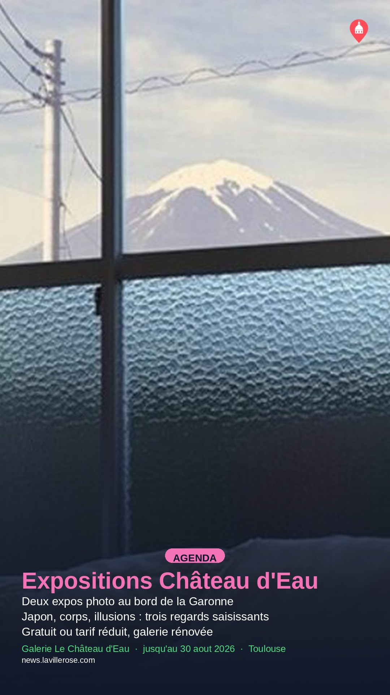
Deux expositions photo à découvrir au Château d'Eau cet été
jusqu'au 30 aout 2026
Le festival Fly to Japan revient à Colomiers du 26 au 30 août
du 26 au 30 aout 2026
Rose Festival : neuf nouveaux artistes annoncés pour l'édition 2026
du 27 au 29 aout 2026